AI 깃허브로 불리는 세계최대규모의 오픈소스AI 플랫폼 허깅페이스
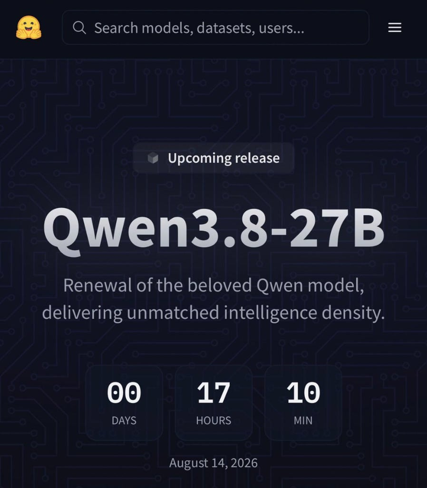
갑자기 Qwen developer 계정에서 신모델을 공개한다는 소식을 알리고
허깅페이스 에서 이례적으로 카운트다운을 띄우는 엄청난 설레발을 진행함
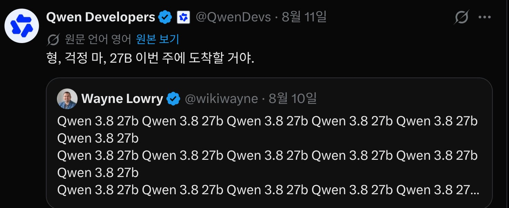
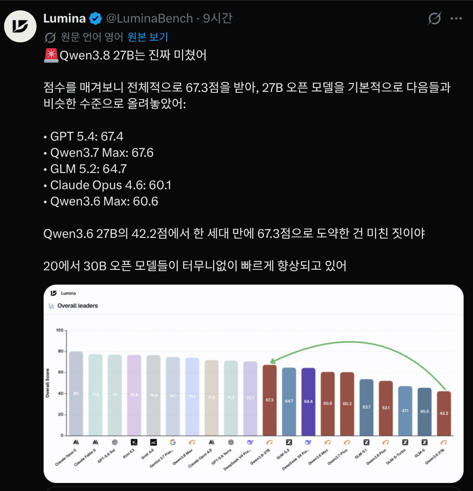
그리고 Qwen3.8 27B가 8월 15일 00시에 공개된 후 말도안되는 괴랄한 성능에 테키들을 혼돈의 도가니에 빠트림
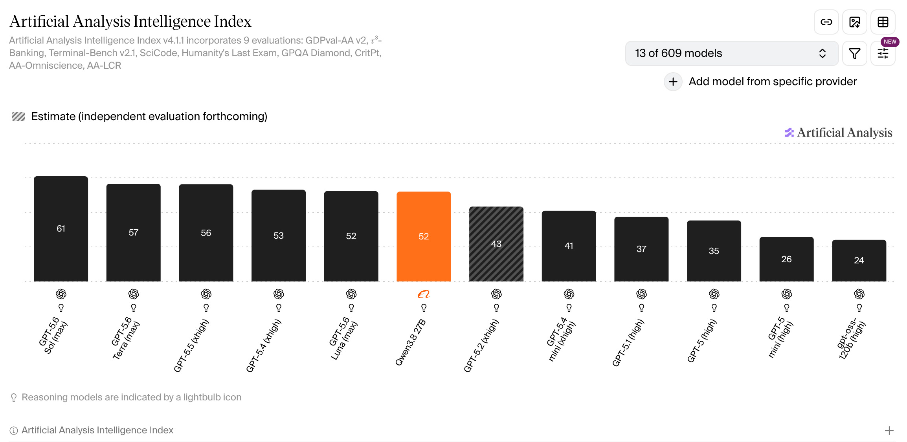
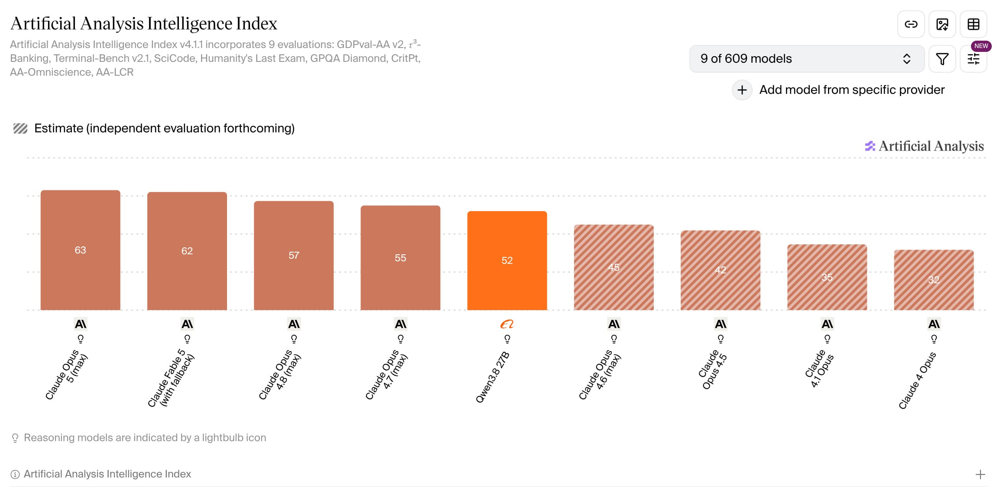
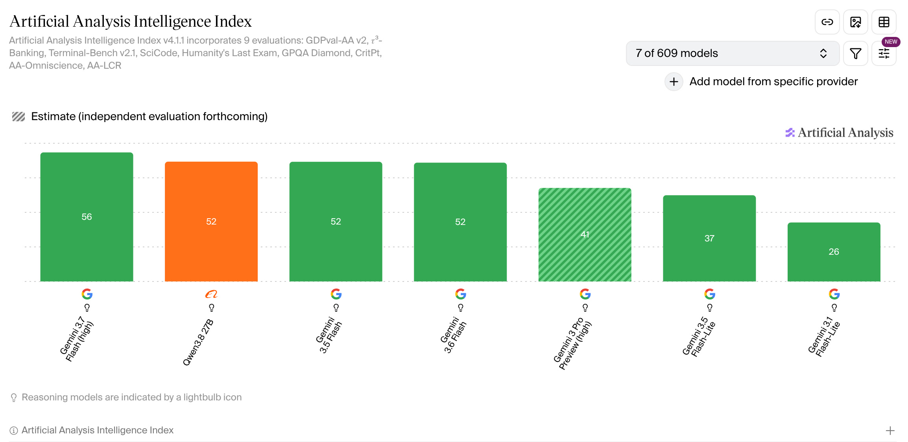
그런데 이게 사람들을 경악시킨 이유는
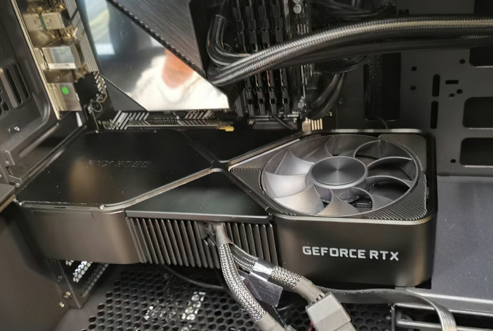
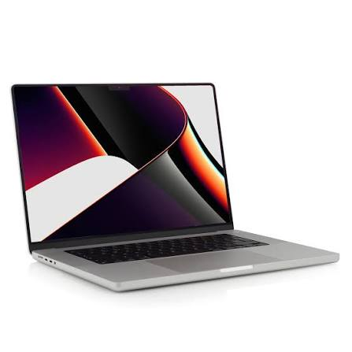
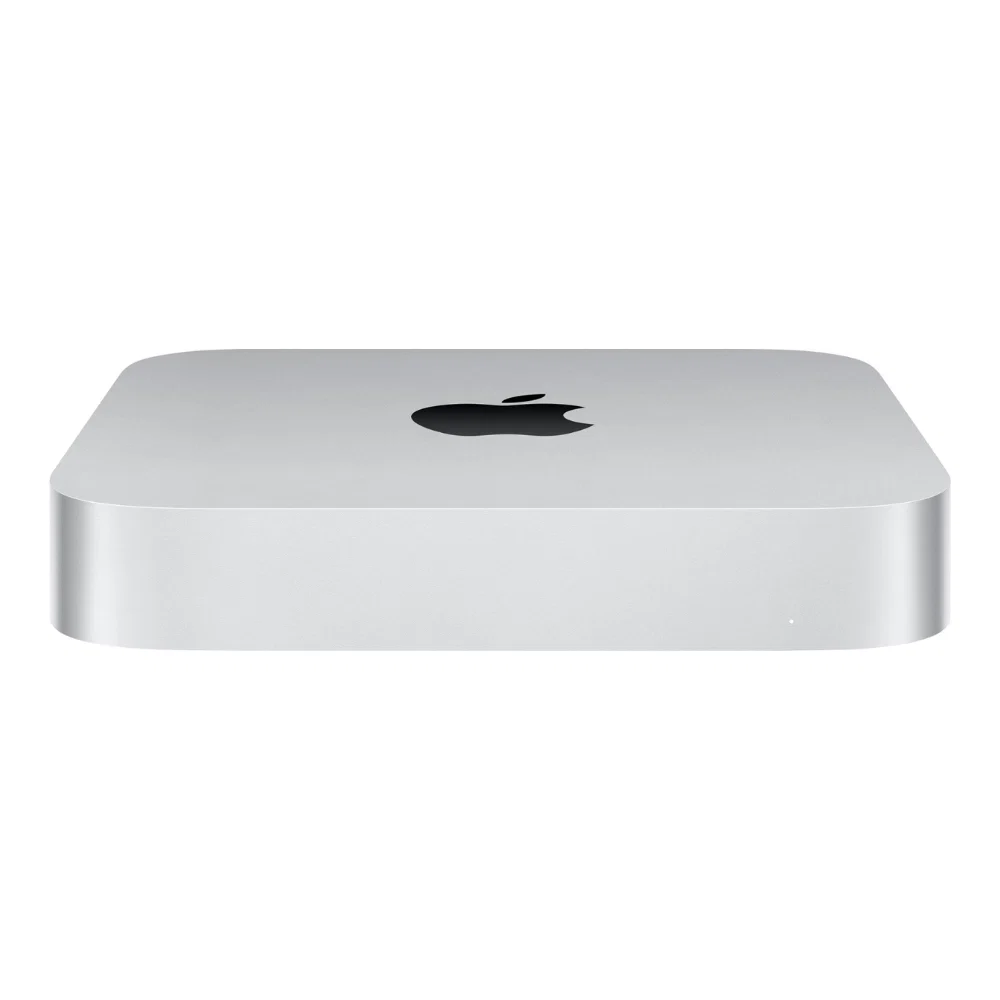
RTX3090 한장, 32GB 맥북/맥미니 하나로 구동이 가능함
4비트 기준 15~17GB는 24GB 그래픽카드에서 안정적으로 구동 가능하고
3비트는 12~13GB 로 성능의 95%를 유지한 채 16GB 그래픽카드에서 구동이 가능함
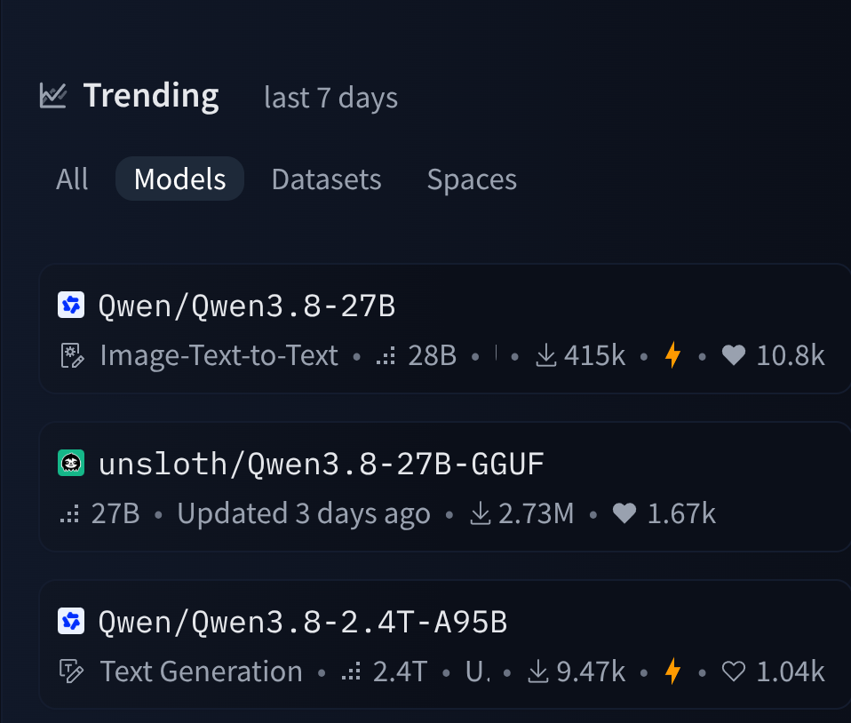
공개 3일만에 허깅페이스 역대모델 최다 좋아요(1위) 달성
(2위: KIMI K3 / 3위: 스테이블디퓨전XL)
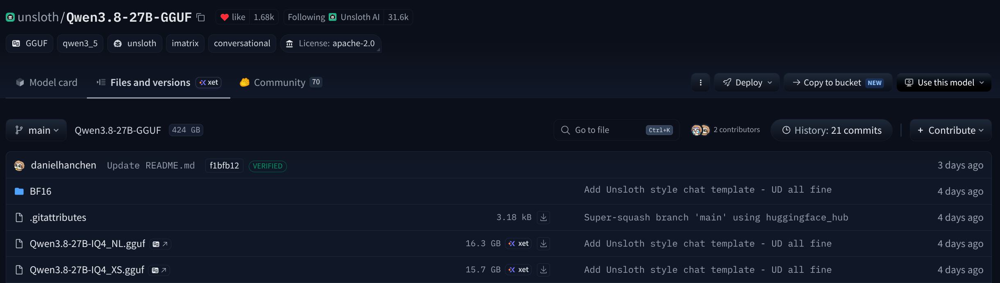
무료임
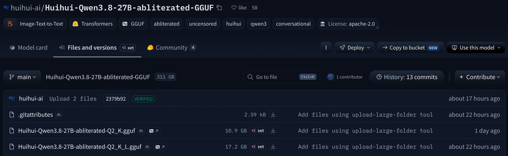
이틀만에 검열해제판 올라옴 (아파치라이선스라서 개조가능)
<-qwen3.8 27B로 만든 HTML 짭마인크래프트
여태까지 개인PC에서 돌리는 AI는 전기먹고 쓰레기만 뱉어내는 물건이였는데
비슷한 크기의 구글 gemma4 31B, Meta 의 Muse Glimmer 30B를 성능으로 박살내고
17GB라는 어지간한 게임보다 작은 AI에서 말도안되는 성능을 내는 상황에 AI판에서 굉장한 주목을 받는 중
댓글
수집 당시 댓글 33개
도르마무 · 3 일 전
무검열 탈옥모델 쓰면 되는데 그런애들은 한글이 좀 찐빠남
닉네임a · 3 일 전
ㅇㅇㅇ
헬조선반도 · 3 일 전
저런 ai로 벡터파일, *.ai나 *.dwg 같은거 학습시킬수 있음?
Decomposer · 3 일 전
딱 rtx3090에 32g 쓰고 있는데.. 근데 이걸로 뭐 할 수 있음? 야짤 생성 가능?
익명
야짤같은건 1060으로도 가능하긴해
Decomposer · 3 일 전
오.. 사용처를 잘 몰라서 고작 생각나는게 야짤뿐인게 한심하게 느껴지네
익명
ㄴㄴ전혀그렇지않음 이런거 관심가지는 사람조차도 아직 극소수임 챗지피티나 제미나이로 운세 봐달라 하는 사람도 널렸는걸
zensation2 · 3 일 전
어허.. 점성술 차트 생성 및 해석을 한큐에 해주신다고!!
익명
삼대남 · 3 일 전
야짤은 스테이블 디퓨전 로컬 모델로도 충분히 함
나랑드콜라 · 3 일 전
근데 저걸 왜 무료로 공개한거야? 저걸로 돈 벌 계획이 없는건가
논리적추론에의한결론도출 · 3 일 전
무료로 맛 보여주고 종속됐을때 유료전환 기본적인 운영임
익명
소형~중형 모델은 완전한 MIT/Aapache2.0라이선스로 풀고 대형 모델은 오픈웨이트+개인이나 소규모사용은 자유지만, 그걸로 장사하면서 일정이상 수익 발생하면 로열티를 내거나 별도 계약해야하는 구조임 qwen3.8 2400B 나 KIMI K3 2800B 같은 초대형 모델이 그렇게 운영되고있음
SAT · 3 일 전
키미 보니깐 그걸로 매출 뭐 100만달러 이래야 로열티 내고 그러더라
익명
나도 그거보고 농담하는줄알았음 ㅋㅋㅋ
따님을주십쇼 · 2 일 전
저거 있으면 토큰 제한 없이 계속 돌릴 수 있는거야..?
김구이 · 3 일 전
몇 달 전 350 주고 맞춘 내 5070ti 16기가 컴퓨터가 드디어 쓸모 있어지는 건가
바흐 · 3 일 전
3비트 한번 맛봐야겟네
쌍판때기칼질하기전에 · 3 일 전
오픈소스 ai ㅇㄷ
개밥조아 · 3 일 전
1660ti야 할수있지?
번째변태중 · 3 일 전
오.. 오푼 ai
레드머킈 · 3 일 전
3비트로 양자화해도 어느 정도 성능이 나오나 보네 신기하다.
샤켓 · 3 일 전
llliliII · 3 일 전
ai 테스트 ㅇㄷ
ye · 2 일 전
M1 pro 32gb로 초당 토큰 몇이나 나오려나;
딜도잘넣는사람 · 2 일 전
따잇하는qwen
타락파워전사 · 2 일 전
AI ㅇㄷ
5년안에포르쉐탄다 · 2 일 전
궁금한게 있는데 윗댓들이 얘기하는게 뭐야? 뭘 세팅 한다는거고 어떤 작업을 할 수 있다는 얘기야? 내가 아는건 그냥 프롬프트 입력해서 이미지나 영상 만드는거밖에 모르는데... 내가 넘 뒤쳐진건가
곽듣퍼 · 2 일 전
이미지나 영상도 ai 분야지만 실사용에서 가장 각광받는건 코딩영역이라 그 얘기일걸
5년안에포르쉐탄다 · 2 일 전
그럼 나랑은 크게 관련이 없구먼
곽듣퍼 · 2 일 전
음.. 그건 또 알 수 없는게 실사용이 코딩이란 얘기일뿐. 실제 코딩에 필요한 추론,개선,제안,결정 등.. 원래 사람이 고민하고 시간을써서 진행하던 작업을 에너지사용(전기등) 만으로 비교도 안되게 빠른 처리를 해버릴 가능성이 계속 열리고 있으니 관련된 전반이 바뀌어갈테니까. 비교하자면 옛날엔 경험많은 노인과 백과사전 등에서 시간들여 얻었던 정보를 지금은 웹서핑으로 앉아서 얻고있잖아. 뭔가 그런류의 개벽이 생기지 않을라나.
케로로중사 · 2 일 전
저걸로 자동화만들어볼까.. 개쩌는데
프로네팔렘 · 1 일 전
그림 그릴줄암?